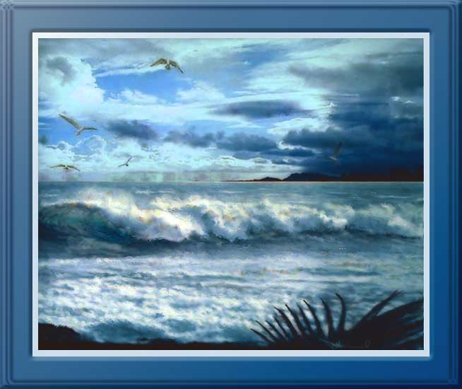

| Windward Rain, Hawaii. Paintage: Watercolor. Trade winds generally keep Hawaii cool, but also bring trade showers along the windward coasts. In this painting I show such showers on the horizon and their associated clouds over the mountains. |